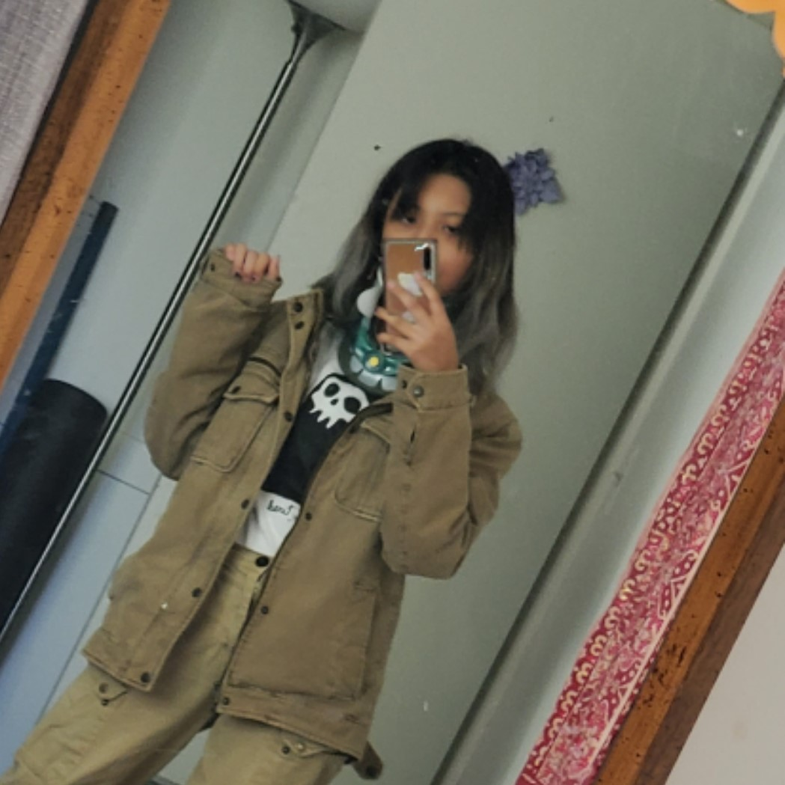
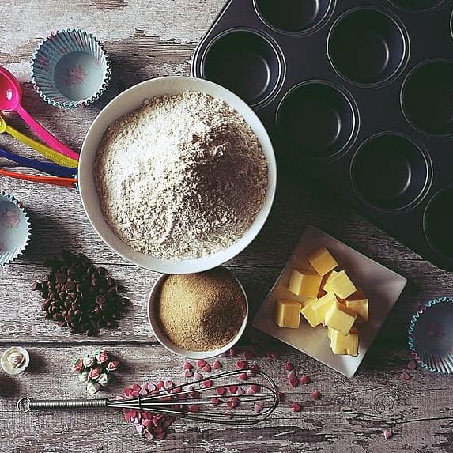
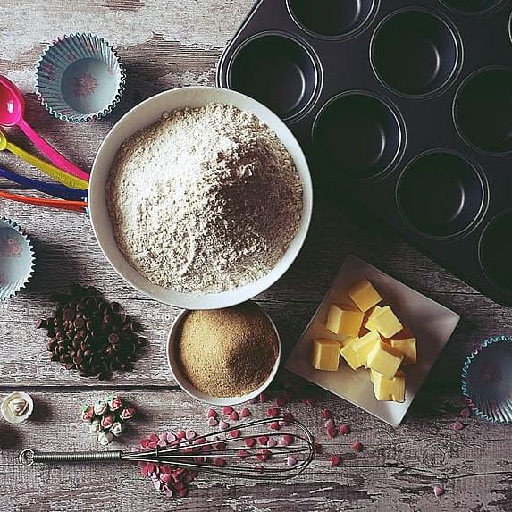

my expression, is creation.
my creation, is expression.
 

I've had highs and lows within my life. Never was it linear. The lows felt deeper than an ocean trench, sufforcating, cold. Only the toughest organisms scrape by. The high parts were naught more than contentment and peace. As for my personality, others may as well know me better than I know myself. Some people have described me as "lowkey", "creative", "loyal", "blunt", "mentally ill". My hobbies are playing video games, swimming, sleeping, hanging out with friends, and listening to music. More than consumption however, it's what we created during our lifetime that breathes on after we're gone. Consuming is a action of the present, while creation is an action of the future. My categories of creations:
- art - digital, ink, pencil
- music - guitar, voice, piano
- food - bread, cake, pie
- poetry - free verse, haiku, rhyme
- design - html5, javascript, python
These are singularly the manifestations of my emotion. I create for myself, yet I do hope that others might see a glimmer of beauty within my work.